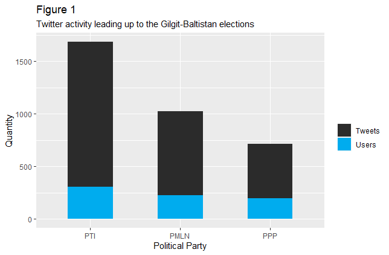
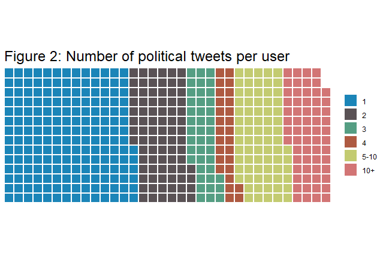
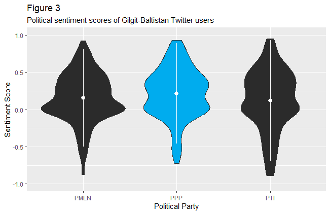
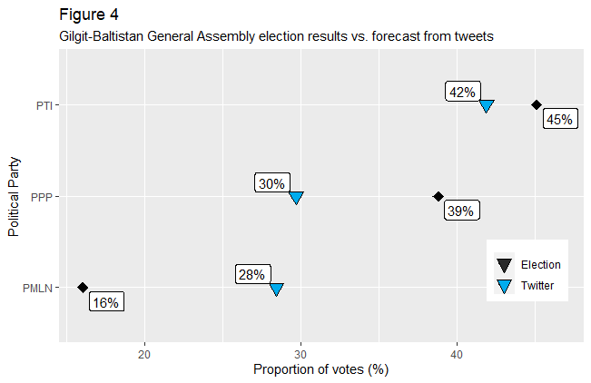
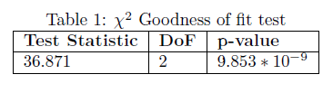

Pakistan’s democracy has suffered for decades with issues of rigging and election fraud. General assembly elections were recently held in the territory of Gilgit-Baltistan, where questions have arrisen over the legitimacy of the results. To work around Pakistani state censorship data is collected via Twitter to determine people’s true political opinions. A model is constructed using this data to reivew the efficacy of the election’s, and we find potential evidence of misreported results, but not a change in the election’s outcome.
Elections for the legislative assembly of Gilgit-Baltistan (GB), a Pakistani administrative territory, were held on 15 November 2020. Preliminary results show the current federal ruling party, Pakistan Tehreek-e-Insaf (PTI), able to form a minority government by winning 10 of 24 electable seats (Mir (2020)). However opposition leader Bilawal Bhutto from the Pakistan People’s Party (PPP) claims that the was election rigged and his party were the true victors (News (2020)). There is a long history of election fraud and rigging in Pakistan, which have called in to question the legitimacy of the state’s democratically elected officials, and this most recent election is not an isolated incident (Pasha (2018)). In fact an election poll of GB voters by Gallup Pakistan found that only 29% of respondents believed that their provincial elections would be free and fair (Geo (2020)).
In their freedom of press index, Reporters Without Borders (RSF) rank Pakistan at 145 out of 180 countries, which is one of the lowest in the world out of all democratic nations (RSF (2020)). This calls in to question the legitimacy of what is reported by the mainstream media in Pakistan, as they may be victim to state censorship. However, common Pakistani citizens largely have freedom of speech on social media platforms. Hence looking at publicly available posts on social media made by Pakistanis can offer us a glimpse in to people’s true opinions. To shed light on the legitimacy of the recent elections, political sentiments will be collected via public posts on Twitter and analyzed. By collecting tweets made in Gilgit-Baltistan leading up to the election, and by conducting a sentiment analysis on them we can find the true uncensored political sentiments of Pakistanis. Using this data the legitimacy of the electoral results can be evaluated.
We begin by outlining the data collection process and reviewing the features of said data in Section 2. A model for extrapolating voter preference is developed in Section 3, and its results highlighted in Section 3. Using these results we can perhaps extrapolate the true outcome of the election and determine if they were fairly held and draw conclusions in Section 4.
Collecting data that can be of value is quite challenging when dealing with social media scrapping, as there is large swathes of content and the vast majority is not useful for this study. The most popular social media platforms in Pakistan are Facebook, Twitter, and Instagram. Due to Instagram being more imagery and less discourse based, it was not used for data collection. While Facebook can be a good avenue for political discussion, the majority of profiles on the platform are private, meaning that only people within individuals friend networks can see their posts, and thus information from them cannot be collected. This leaves us with Twitter, a discussion based platform which is also the most popular social media platform for political discussion (Yaqub et al. (2020)). For our convenience Twitter has their own Application Programming Interface (API), which serves as an intermediary for those looking to extract data from their platform. An API enables us to circumvent the tedious task of web scrapping and simplifies the data collection process (Twitter (2020)).
With developer access to Twitter’s API one has the ability to search through the archive of all posts, known as tweets, made on the platform. This allows us to collect tweets leading up to the provincial election in GB. Although a long time series analysis may be preferable, due to rate limits on the API we have elected to collect data on the 4 weeks leading up to the election. This should serve as a reasonable time frame for collecting sufficient information on the public’s opinions of the running parties.
Now that the medium and time interval has been established, the frame and sample must be identified. As we are studying the provincial assembly election, only those who are residents of GB and are Pakistani citizens aged 18+ are allowed to vote (GOV (1973)). However because we are collecting data via Twitter it would prove quite challenging to verify any of these three factors, as users are not required to make this information public on their profiles. What we are able to do on the platform however is limit our search to within GB to obtain information specifically on those located within the province. This gives two methods of collecting tweets, the first being tweets that are geolocated via GPS, and tweets from those with GB listed as their profile location. Although the former strategy is a more verifiable measure, only 1% of tweets made are geolocated which would greatly limit our population frame, hence both methods will be used (Yaqub et al. (2020)). Additionally after running a few trials it was found that approximately half of the tweets in GB are written in English and the other half Urdu. As we are using sentiment analysis and the existing literature on doing so with Urdu text is limited, only the English tweets will be considered. Although the election was based on constituencies, there is not enough tweet data available to delineate between all the individual ridings. So instead the outcome of the popular vote will be measured.
The search has now been narrowed down greatly to a small scope that can provide the critical information required. All that is left now is to define key words to search by. As Pakistan is considered a three party system, and pre-election polls found that those three parties were front running candidates, the search will be looking only at these parties and their representatives (Geo (2020)). These parties are the Pakistan Tehreek-e-Insaf (PTI), Pakistan Peoples Party (PMLN), Pakistan Muslim League Nawaz (PMLN). Alongside the names of parties, the names of their respective leaders and representatives were also included in the search terms. Please refer to the data collection code to see a full list of search terms link.
The searches are run through the Twitter API via the wrapper R package rtweet (Kearney (2019), R Core Team (2020)). the process is fully replicable, the code for it can be found on this Github repository. The API returns 90 variables for every tweet, however we are only interested in a few of them so they can be narrowed down to user ID, time created, tweet text, likes, and retweets.
Over the four week period we find that there were 3423 tweets posted pertaining to the election from 474 unique users. At face value this may seem like a low amount however the circumstances in GB must be considered. With a population of approximately 1.5 million of which only 350,000 cast a vote, GB is a relatively small and sparsely populated region (Election (2020)). Additionally the territory’s educational institutions are chronically under developed, making it difficult for many members of the population to attain an education or gain literacy. Another limiting factor is the mountainous geography of region that prevents a majority of the population from having regular internet access (Geo (2020), Baloch and Musyani (2020), Soed (2004)).
Given these circumstances, this limited sample size can still provide valuable information on the recent elections. Two independent bodies, Gallup Pakistan and Pulse Consultant, conducted surveys prior to the election and were also each limited to sample sizes of 1000 people. Unfortunately their reports have not been made public, so it would not be possible to review their methodologies (Geo (2020)).

Referring back to the collected data, illustrates the information collected. The main takeaways are: 1685 tweets from 308 users on PTI, 1024 tweets from 226 users on PMLN, and 714 tweets from 195 users on PPP. These figures are by no means indicative of popularity or electoral prowess, as they lack textual analysis. However they are still important to review to understand the data. PTI likely has the largest number of mentions as they are the current federally ruling party, meaning that they are constantly involved in the mainstream dialogue. And PMLN likely leads PPP as they were the presiding party in the GB general assembly leading up to the election. From it is apparent that there is a disparity in the quantity of tweets per party, however this should not be an issue for our purposes. However something that is a cause for concern is the number of tweets made per person.

is a visualization of the number political tweets made per user in our data set leading up to the election. Each square represents an individual, from this it is apparent that the vast majority of users had less than 5 political tweets while a loud minority had several more, including 3 users with over 100 tweets. If this data is to be used as an election prediction tool, using it without some adjustments may produce a biased outcome because of this difference in volume.
In an election voters are only allotted one vote each, since this study seeks to evaluate the efficacy of the elections it should follow a similar method or runs the risk of having a biased sample. The proposed solution is to assess the sentiments of all tweets and then give each user a sentiment score based on their tweets, to predict their electoral preference.
The goal of this study is to determine the legitimacy of the GB general election results, as there is suspicion of election fraud as previously mentioned. Hence the model of analysis has been structured to pass judgment on this. To do this a two layered approach has been adopted, the first being the execution of a sentiment analysis via the R package VADER (Valence Aware Dictionary for Sentiment Reasoning) (Roehrick (2020)). VADER is a Natural Language Processing (NLP) tool that has developed a dictionary of terms and grammar to which it can assign a sentiment score. Using the sentiment scores of terms in a passage it can then assign it with an overall compound sentiment between -1 (extremely negative) to 1 (extremely positive). The formula by which it does so is (Ma (2020)):
\[\frac{x}{\sqrt{x^2 + \alpha}}\]
in VADER \(\alpha = 15\) as a normalization constant and \(x =\) sum of words valence scores. Using this we can assign each individual tweet with a compound sentiment score. Out of all other possible NLP alternatives VADER was chosen for two reasons. Firstly its dictionary lexicon has been designed specifically for analyzing the language of tweets, and secondly it provides us with a specific positive, negative, or neutral score for each tweet which is valuable for voting behavior forecasting.
After executing the sentiment analysis process we should have a sentiment score for each tweet. With this information the aforementioned sentiment portfolio can be created for each user in the data set. This is a two tiered process formulated as follows:
\[Party Score_{user} = \frac{\sum_{1}^{n} tweet_{party}}{n} \]
\[User_{vote} = max(Party Score_{user}) \] s.t. \(Party Score_{user} > 0\) (i.e. positive sentiment)
In step 1 the user’s sentiment score towards each party is calculated by taking the average sentiment of their tweets mentioning the party. In step 2 the party which the user has the highest positive sentiment towards is selected as their de-facto vote. By repeating this process for every user in the collected tweets data set, we can construct a simulated election to compare against the results of the actual election.
In the second phase, we need to validate the efficacy of the results we can conduct a chi-squared goodness of fit test based on the voter distribution of preliminary election results (Election (2020)). The null hypothesis is:
If we are to reject the null hypothesis at the 95% significance level, then the Twitter data contradicts the election results.
To train the model for determining people’s voting preference, the sentiment of our collected tweets data set must be reviewed in regards to the parties. This is the process illustrated in equation 1 from the model development section. The outcome is shown as a violin plot in , which visualizes the frequency and sentiment of tweets about each of the three political parties. In this a sentiment score of 0 is considered neutral, while less than 0 is negative, and more than zero positive. From this it can be seen that the most favourably viewed party on Twitter is the PPP, who have the greatest volume of positive sentiment tweets and highest mean sentiment. Surprisingly the victors of the general election, PTI, actually have the most negative tweets and lowest mean sentiment.

With this data now available the voter preference of voters can be forecasted. As stated in equation 2 by comparing users sentiments towards all the parties, it is projected that a user is most likely to vote for the party they have the most positive sentiment score towards. With this method we have created an observational poll of sorts, which we can compare to the actual election results. illustrates this comparison, it can be seen that there are large discrepancies between the two results especially in regards to PPP and PMLN.

To empirically verify the results a chi-squared goodness of fit test is conducted, the results of which are shown in . With a p-value significantly less then 0.05, we must reject the null hypothesis \(H_0 : (PTI, PPP, PMLN) = (0.45, 0.39, 0.16)\). Meaning that the data from Twitter is too extreme to reasonably fit the distribution of the election results. This can potentially be damaging towards the legitimacy of Gilgit-Baltistan’s general elections.

The objective stated at the beginning of this paper was to ascertain whether the recent General Assembly elections in Gilgit-Baltistan had been free and fair. The medium for deciding this was by comparing sentiments shown by Twitter users in GB to the results released by the Election Commission. From this comparison it was observed that although there were rather large discrepancies between the tweet data and the official results, the Pakistan Tehreek-e-Insaf were still the leading party, meaning that this analysis can not claim an illegitimate victory in this context. However it would appear that the popularity of the PPP may be overstated and the PMLN understated. Had the PMLN won more seats the outcome of the election may have been different, as a coalition of opposition parties including PPP and PMLN have recently formed a joint effort called the Pakistan Democratic Movement (PDM). If PMLN had truly deserved to win more seats then perhaps a PDM coalition would have been able to form their own minority government (TN (2020)).
Interestingly it was observed from that the average sentiment towards the PPP was the most positive out of all parties, though the voter preference extrapolation found that PPP was actually less popular than shown in the election results. This can perhaps be attributed PPP also having the fewest number of tweet mentions leading up to the election, so although they seem popular amongst Twitter users they do not have as large a voter base as PTI.
The results of this analysis are by no means rigorous nor conclusive, as this is a rather novel observational study. There are many caveats to be made when viewing the results, firstly that our Twitter sample is by no means a representative sample as we could not discriminate between demographics. Nor could the legitimacy of each user be verified, it is entirely possible that users in the sample are not legitimate Gilgit-Baltistan residents or voters. Recently news broke of PTI running large scale social media trolling operations, this sample may be victim to this amongst other challenges when working with this type of data (Waraich (2020)). Additionally using sentiment analysis as a proxy for voter preference is a concept without any available academic literature, and may not be an entirely transferable concept. Yet when the results of this study are compared to that of pre-election polls by Gallup Pakistan and Pulse Consultants, they are largely similar (Geo (2020)).
As the model used was a novel process without any prior academic literature, statistical methodologies used may not be the optimal options and there are many avenues of possible improvement. One of the primary strugles in this circumstance was collecting a reasonably large sample size due to the Twitter API’s rate limits in collecting archived tweets (older than 14 days). A work around for this can be attaining funding to purchase greater premium bandwidtch, or collecting tweets live leading up to the election. Additionally the region of GB struggles with internet access and literacy rates, so perhaps this model would be better suited for more developed regions (Baloch and Musyani (2020)). Furthermore, given that approximately half of the tweet made in Pakistan are in the Urdu language, a NLP program that can gauge the sentiment of Urdu writing would grealty improve our sample. Regardless, the idea behind this analysis can be incredibly valuable for states that suffer from corruption and censorship, as it can reflect the true views of citizens and assist in fighting oppression.
When looking at the model development there are avenues where it could be improved in hindsight. As this was a user based analysis, as opposed to tweet based, more work could have been done to determine users party preference. Instead of only looking at their tweet history, their favourited tweets or people they follow could also be considered in the model to determine their opinions. Additionally perhaps more users could have been collected in the sample by searching for users located in GB as opposed to tweets, and starting the analysis from there.
It is important to note that this study is not concluding with the definitive claim that the Gilgit-Baltistan general elections were corruption free, only that the data collect via Twitter does not contradict PTI’s victory. Election fraud can still exist in many other forms not measured in this analysis.
All code can be found here: https://github.com/KhizerA/Twitter
Visualizations produced with the R packages ggplot2, waffle, and tidyverse (Wickham et al. (2019), Rudis and Gandy (2019), Wickham (2016))
Complied using R Markdown (Xie, Allaire, and Grolemund (2018)).
Baloch, Shah Meer, and Zafar Musyani. 2020. Pakistan’s Great Digital Divide. Tokyo, Japan: The Diplomat. https://thediplomat.com/2020/07/pakistans-great-digital-divide/.
Election. 2020. Candidate Result Gb Assembly Election 2020. Islamabad, Pakistan: Election Pakistani. https://www.electionpakistani.com/gilgit-baltistan-2020/result.html.
Geo. 2020. Gilgit-Baltistan 2020 Election Surveys Reveal Pti Ahead. Karachi, Pakistan: Geo News. https://www.geo.tv/latest/317915-gb-election-2020-surveys-reveal-pti-ahead-of-ppp-pml-n.
GOV, PK. 1973. Election Laws. Islamabad, Pakistan: Pakistan Election Commission. https://www.ecp.gov.pk/frmGenericPage.aspx?PageID=3032.
Kearney, Michael W. 2019. “Rtweet: Collecting and Analyzing Twitter Data.” Journal of Open Source Software 4 (42): 1829. https://doi.org/10.21105/joss.01829.
Ma, Ying. 2020. NLP: How Does Nltk.vader Calculate Sentiment? Los Angeles, California: Ro Data Team. https://medium.com/ro-data-team-blog/nlp-how-does-nltk-vader-calculate-sentiment-6c32d0f5046b.
Mir, Shabbir. 2020. PTI Stakes Claim on G-B Govt. Karachi, Pakistan: The Express Tribune. https://tribune.com.pk/story/2272317/g-b-polls-pti-leads-with-10-seats-independents-bag-7-and-ppp-3.
News, Geo. 2020. Bilawal Vows to Continue Protest Against ’Rigged’ Gilgit Baltistan Elections. Karachi, Pakistan: Geo News. https://www.geo.tv/latest/318888-gilgit-baltistan-elections-2020-results-were-changed-overnight-bilawal.
Pasha, Ebad. 2018. Election Rigging 101: How to Steal a Mandate. Karachi, Pakistan: Dawn News. https://www.dawn.com/news/1416841.
R Core Team. 2020. R: A Language and Environment for Statistical Computing. Vienna, Austria: R Foundation for Statistical Computing. https://www.R-project.org/.
Roehrick, Katherine. 2020. Vader: Valence Aware Dictionary and sEntiment Reasoner (Vader). https://CRAN.R-project.org/package=vader.
RSF. 2020. 2020 World Press Freedom Index. Paris, France: Reporters Without Borders. https://rsf.org/en/world-press-freedom-index.
Rudis, Bob, and Dave Gandy. 2019. Waffle: Create Waffle Chart Visualizations. https://gitlab.com/hrbrmstr/waffle.
Soed. 2004. Northern Areas State of Emergency and Development. Islamabad, Pakistan: Northern Areas Strategy for Sustainable Development. https://web.archive.org/web/20041122012829/http://www.northernareas.org.pk/nassd/soed_pdf/ppe13.pdf.
TN. 2020. PDM Rejects Gb Elections Results: People Buried Opposition Narrative, Says Govt. Islamabad, Pakistan: The News. https://www.thenews.com.pk/print/744615-pdm-rejects-gb-elections-results-people-buried-opp-narrative-govt.
Twitter. 2020. Twitter Api. San Francisco, California: Twitter. https://developer.twitter.com/en/products/twitter-api.
Waraich, Omar. 2020. Hero and Villian: The Man Who Wanted Both. Karachi, Pakistan: Dawn News. https://www.dawn.com/news/1570912/hero-and-villain-the-man-who-wanted-to-be-both.
Wickham, Hadley. 2016. Ggplot2: Elegant Graphics for Data Analysis. Springer-Verlag New York. https://ggplot2.tidyverse.org.
Wickham, Hadley, Mara Averick, Jennifer Bryan, Winston Chang, Lucy D’Agostino McGowan, Romain François, Garrett Grolemund, et al. 2019. “Welcome to the tidyverse.” Journal of Open Source Software 4 (43): 1686. https://doi.org/10.21105/joss.01686.
Xie, Yihui, J. J. Allaire, and Garrett Grolemund. 2018. R Markdown: The Definitive Guide. Boca Raton, Florida: Chapman; Hall/CRC. https://bookdown.org/yihui/rmarkdown.
Yaqub, Ussama, Nitesh Sharma, Rachit Pabreja, Soon Ae Chun, Vijayalakshmi Alturi, and Jaideep Vaidya. 2020. Location-Based Sentiment Analyses and Visualization of Twitter Election Data. New York, USA: Association of Computer Machinery. https://doi.org/10.1145/3339909.